MLP End Term60 questions100 marks33 MCQ · 17 SA · 10 MSQ
Elapsed 00:00
Q1MCQ2 marks
The adfuller() function in statsmodels is used to test:
Whether a time series has seasonal patterns
Whether a time series is stationary
Whether the data follows a normal distribution
Whether the variance of the data changes over time
Q2MCQ2 marks
What will typically happen if series_with_nans contains NaNs (null values) ?
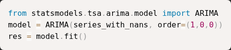
statsmodels will automatically impute NaNs and fit silently.
fit() will raise an error or drop NaNs depending on the estimator; user should handle NaNs beforehand.
NaNs are treated as zeros.
The model will only use the NaN values to estimate variance.
Q3MCQ1 mark
A newly launched movie has no ratings, but metadata such as genre, cast, and director is available. Which algorithm can still recommend it?
User-based Collaborative Filtering
Item-based Collaborative Filtering
Content-based filtering
Matrix factorization without regularization
Q4MCQ2 marks
Performing singular value decomposition on a user-item matrix aims to:
Increase sparsity
Reduce dimensionality
Delete user history
Improve data imbalance
Q5MCQ2 marks
Which of the following can be used to evaluate the outputs of the KNNClassifier?
Negative Mean Absolute Error
Silhoutte Score
F1 Score
R2 Score
Inertia
Q6SA2 marks
What is the output of the following standard scaler transformation?
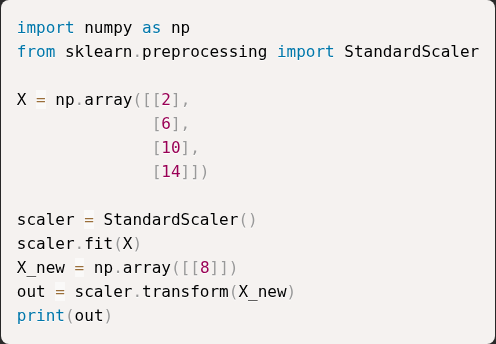
Q7SA1 mark
What is the value of recall score computed in the following code? (Enter upto 2 decimals)
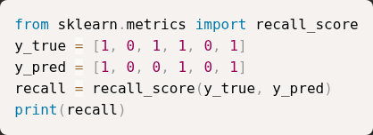
Q8MSQ2 marksselect all that apply
Which of the following algorithms don't get impacted by feature scaling?
LinearRegression
KNN
KMeans
DecisionTree
Q9SA2 marks
Consider the following data preprocessing code. What are the number of zero(s) in the transformed labels vector after applying label encoding?
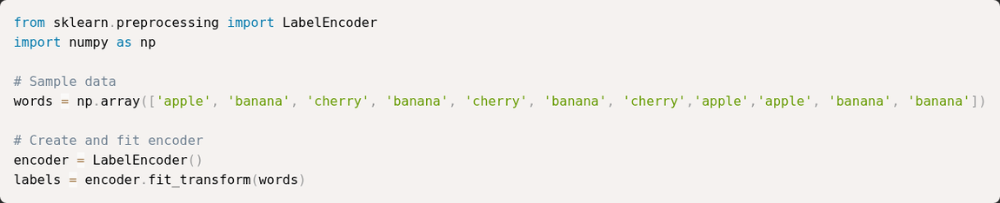
Q10MCQ1 mark
What does metric in the following code measure?
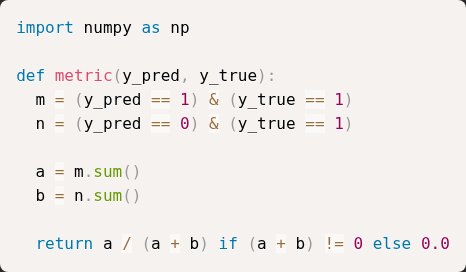
Accuracy
Precision
Recall
F1_Score
Q11SA1 mark
Compute cosine similarity for the two items which have feature vectors as given below (rounded to 2 decimals).
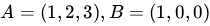
Q12MCQ2 marks
Identify the datatypes of the two datasets given below: (Assume all library imports are correctly done)
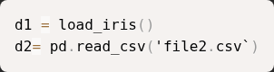
bunch , bunch
bunch , dataframe
dataframe , bunch
series, dataframe
Q13MCQ1 mark
Which of the following statements about Hierarchical Agglomerative Clustering is TRUE?
It starts with all data points in a single cluster and recursively splits them.
It requires the number of clusters to be specified before training.
It repeatedly merges the two closest clusters until a stopping condition is met.
It updates cluster centroids after each merge.
Q14MCQ1 mark
You are using a ColumnTransformer to preprocess a dataset before training a model:
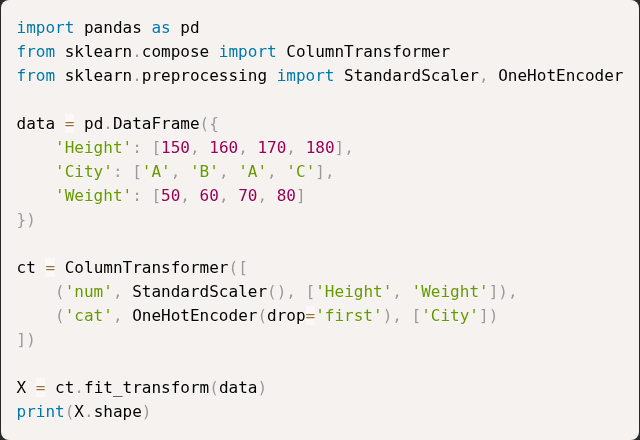
What will be the shape of the transformed matrix X?
(3,2)
(4,4)
(3,4)
(4,3)
Q15SA2 marks
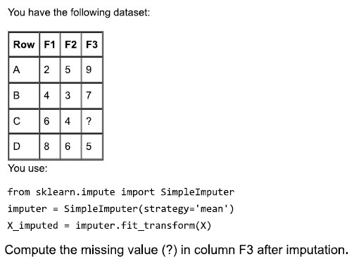
Q16SA2 marks
You are given the following dataset and model:
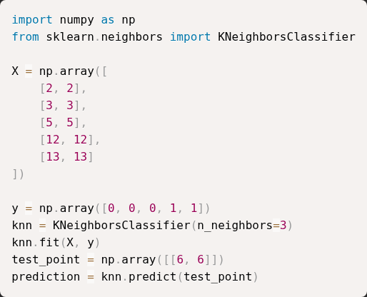
What is the value of prediction after running this code?
Q17MSQ2 marksselect all that apply
For the RandomForestClassifier select the correct pair(s) of parameter(s) and their explanation(s).
n_estimators – Number of trees in the RandomForestClassifier
max_depth – Maximum depth allowed for each decision tree
min_samples_leaf – Controls the maximum number of trees that will be created
bootstrap – Sets the number of features used for splitting at each node
Q18MCQ1 mark
What is the output of the following code?
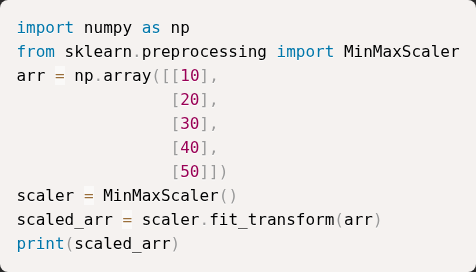
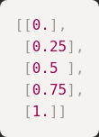
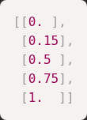
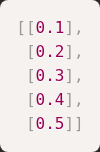
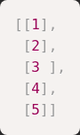
Q19MCQ2 marks
Consider the following code snippet. Assume that all required libraries have been imported correctly.
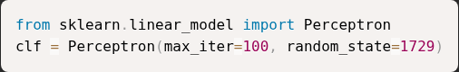
A practitioner observes that each time the fit() method is called on clf, the model is trained from scratch and the parameters learned in the previous training call are discarded. Which of the following changes should be made so that the model continues training from the previously learned parameters when fit() is called again?
Set warm_start=True
Combine training data from all training sessions into a single dataset
Set retain_parameters=True
This behavior cannot be changed for Perceptron
Q20MCQ1 mark
Consider the following cases for splitting train and test data for some real world dataset.
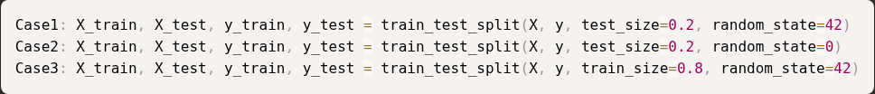
Which of the following hold true?
The selected samples(rows) in X_train will always be same for all the cases.
The selected samples(rows) in X_train will always be different for all the cases.
The selected samples(rows) in X_train will always be different for case 1 and case 2.
The selected samples(rows) in X_train will always be different for case 1 and case 3.
Q21SA2 marks
You are performing hyperparameter tuning using GridSearchCV for a machine learning model. The following parameter grid is provided:
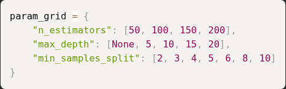
How many unique hyperparameter combinations will GridSearchCV evaluate in total?
Q22MCQ1 mark
You are using make_blobs to generate synthetic data for clustering:
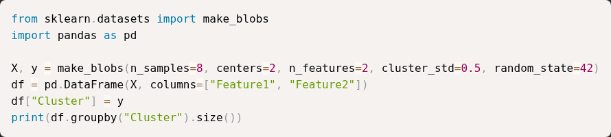
What will the output of the above clustering show?
One cluster containing all points.
It will raise an error since n_samples is not divisible by centers
Two clusters, but not necessarily equal-sized; distribution of samples per cluster may vary.
Two clusters with exactly 4 points each.
Q23MCQ2 marks
What does the following pandas code do ?
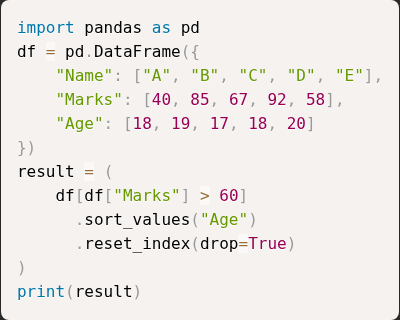
All rows where Age < 18, sorted by Marks, index unchanged.
Only rows where Marks > 60, sorted by Age, and index reset.
All rows sorted first by Marks, then by Age.
Drops the Age column and sorts remaining data.
Q24MCQ2 marks
What does the parameter hidden_layer_sizes=(50, 30) represent in both MLPClassifier and MLPRegressor?
50 input features and 30 output units
Two hidden layers with 50 and 30 neurons respectively
50 epochs and 30 batches
50 samples per batch and 30 iterations
Q25MCQ1 mark
What is the role of the alpha=1.0 parameter in the given sklearn code to build a regression model?
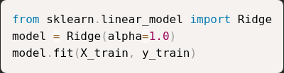
It applies L1 regularization and sets some coefficients to zero.
It removes regularization completely and behaves like Linear Regression.
It adds L2 regularization that penalizes large coefficients to prevent overfitting.
It makes the model ignore the intercept term.
Q26SA2 marks
What is the output of the following code?
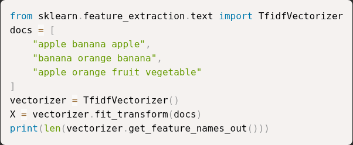
Q27MSQ2 marksselect all that apply
Which of the following is a hyper parameter?
"intercept_" in LinearRegression
"degree" in PolynomialFeatures
"n_neighbors" in KNeighborsClassifier
"max_depth" in DecisionTreeClassifier
Q28MSQ2 marksselect all that apply
Consider the following code snippet that trains a Decision Tree classifier using scikit-learn:
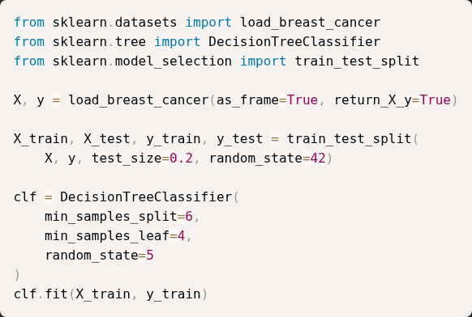
A node in the trained decision tree is split only if both of the following conditions are satisfied: • The node contains at least min_samples_split samples. • Each child node created after the split contains at least min_samples_leaf samples. Assume node (N) is a non-leaf node being considered for splitting. In which of the following cases will the split at node (N) be allowed?
Node (N) contains 15 samples. After splitting, the left child has 9 samples and the right child has 6 samples.
Node (N) contains 6 samples. After splitting, the left child has 4 samples and the right child has 2 samples.
Node (N) contains 12 samples. After splitting, the left child has 3 samples and the right child has 9 samples.
Node (N) contains 8 samples. After splitting, the left child has 4 samples and the right child has 4 samples.
Q29MCQ2 marks
Consider the following ensemble model built using VotingClassifier with voting='soft':
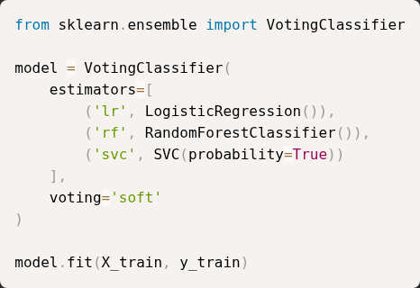
How is the final prediction for a test sample obtained?
By selecting the most common predicted class.
By averaging predicted class probabilities.
By summing the predicted class labels.
By choosing the most accurate classifier.
Q30MCQ2 marks
You are given a dataset where each row represents a customer using two numerical features. You apply K-means clustering with K=3 clusters using the following code:
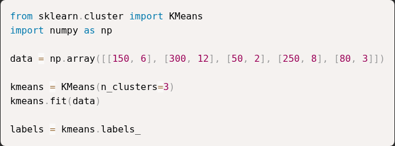
What does the variable labels represent after the model is fitted?
The values of the input features used for clustering.
The cluster index assigned to each data point.
The total number of clusters formed.
The coordinates of the cluster centroids.
Q31MCQ1 mark
Identify the errors in the following code:
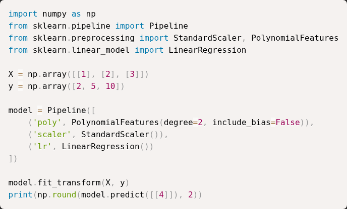
include_bias has to be kept true for polynomial features.
MinMaxScalar should be used for simple LinearRegression Models
model.fit_transform should be replace with model.fit
model.predict should be replaced with model.predict_proba
Q32MCQ1 mark
You are using a ColumnTransformer to preprocess a dataset before training a model:
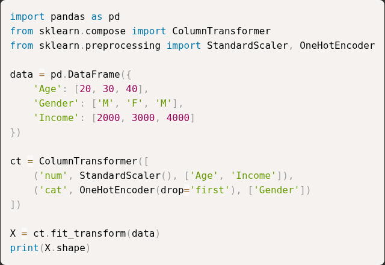
What will be the shape of the transformed matrix X?
(3,2)
(3,3)
(3,4)
(4,3)
Q33MSQ1 markselect all that apply
We use classification report to evaluate our classification model:
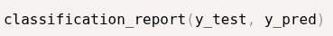
Which of the following metrics are included in the classification report?
Accuracy
Mean Squared Error
F1 Score
Cross Entropy Loss
Recall
Q34MCQ1 mark
Consider the following cases for splitting train and test data for some real world dataset.
Which of the following hold true?
The selected samples(rows) in X_train will always be same for all the cases.
The selected samples(rows) in X_train will always be different for all the cases.
The selected samples(rows) in X_train will always be same for case 1 and case 3.
The selected samples(rows) in X_train will always be same for case 2 and case 3.
Q35SA2 marks
What is the output of the following code? (Round to 2 decimals)
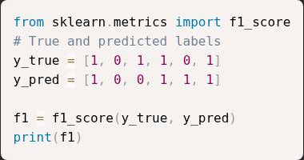
Q36SA2 marks
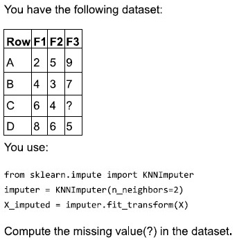
Q37MCQ2 marks
You are given the following DataFrame:
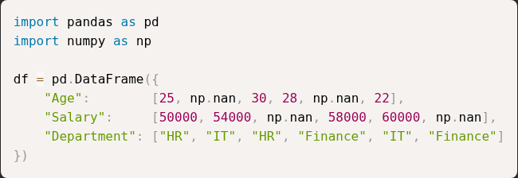
You want to perform the following imputation strategy: • Age → Replace missing values with the mean Age of each Department • Salary → Replace missing values with the median Salary of the entire column • Department → No imputation Which of the following code snippets correctly performs the above imputation?
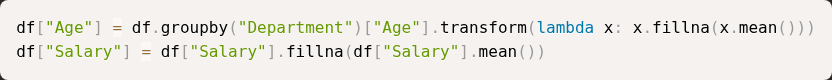
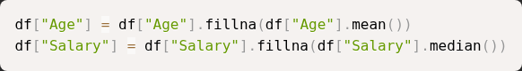
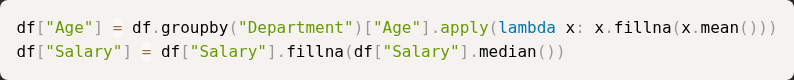
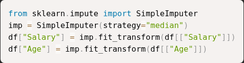
Q38SA2 marks
You are given the following dataset and model:
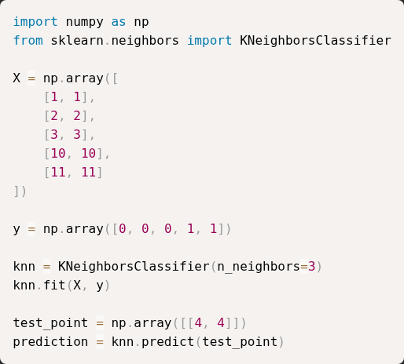
What is the value of prediction after running this code?
Q39MSQ2 marksselect all that apply
Select the correct statements from the following regarding GridSearchCV:
best_score parameter of grid search returns the mean cross validated score of all the cross validation folds.
best_score parameter of grid search returns the max cross validated score of all the cross validation folds.
If there are 2 parameter sets A and B with A having 3 values and B having 4 values the total parameter combinations grid search will try is 7.
If there are 2 parameter sets A and B with A having 3 values and B having 4 values the total parameter combinations grid search will try is 12.
No other scoring metric other than R2 score and mean_squared_error can be used as the scoring metric for GridSearchCV in case of regression problems.
Q40SA2 marks
For the given above code calculate the sparcity (% of zeros) in one_hot. Enter your answer in percentage rounded to 2 decimals.
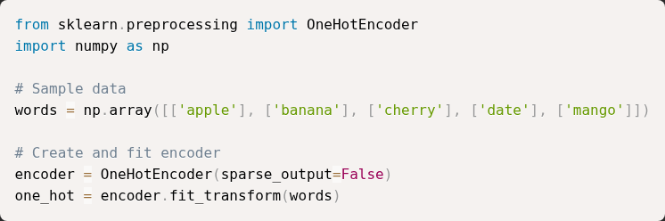
Q41MCQ2 marks
You are using make_blobs to generate synthetic data for clustering:
What will the output of the above clustering code?
One cluster containing all points.
It will raise an error since n_samples is not divisible by centers
Two clusters, but not necessarily equal-sized; distribution of samples per cluster may vary.
Two clusters with exactly 4 points each.
Q42MCQ2 marks
What does metric in the following code measure?
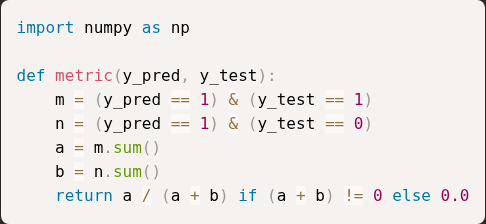
Accuracy
Precision
Recall
F1_Score
Q43MCQ2 marks
You are training a RandomForestRegressor on a dataset with 20 features and 10,000 samples. Consider the following code:
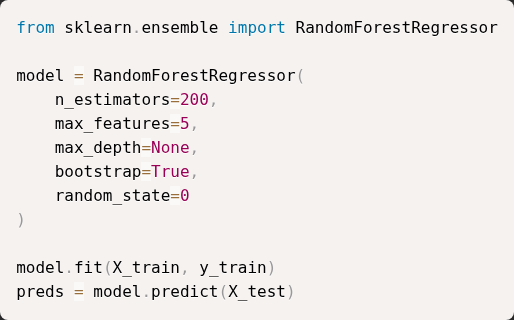
Which of the following statements is TRUE about how this Random Forest model will behave?
With bootstrap=True, every tree sees the entire dataset, but the samples are shuffled randomly for each tree.
The forest will use all 20 features for each split, but only 5 trees out of the 200 will be trained on bootstrap samples.
Setting max_features=5 means only 5 trees out of 200 will use feature subsets, while the rest use all features.
Each tree will consider only 5 randomly chosen features when looking for the best split at every node.
Q44SA2 marks
What will be the output of the following code ? (Round to two decimals)
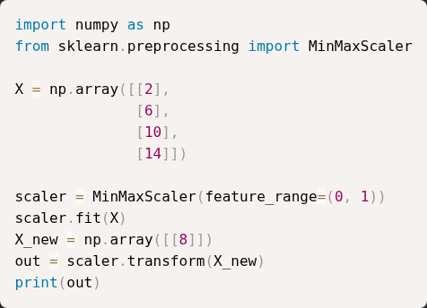
Q45MCQ1 mark
If pval = 0.03 for the following code, which of the option is correct at the 5% level?
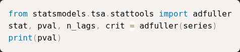
Series is non-stationary.
Series is stationary.
The series has trend.
The series is noise.
Q46MCQ2 marks
You are given the following four implementations of cosine similarity in NumPy. Which function correctly computes cosine similarity?
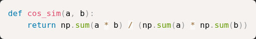
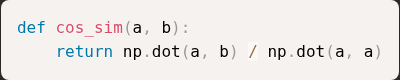
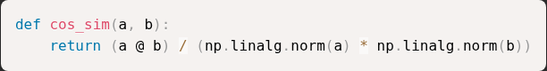
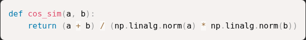
Q47MSQ1 markselect all that apply
Which of the following can be used to evaluate the outputs of the K-Means algorithm?
Negative Mean Absolute Error
Silhoutte Score
F1 Score
R2 Score
Inertia
Q48MSQ2 marksselect all that apply
Select the correctly matched pairs of sklearn functions with the use of fit, fit_transform and transform.
Learning the weights of logistic regression model on training data - fit_transform
Creating a decision tree on the training data - fit
fitting MinMaxScaler on test data - fit_transform
fitting MinMaxScaler on train data - fit_transform
Q49SA1 mark
What is the output of the following code?
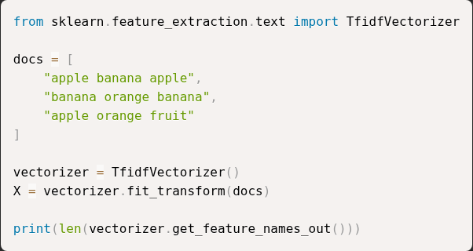
Q50MCQ1 mark
Following is the code to tune the degree parameter of a polynomial regression model.
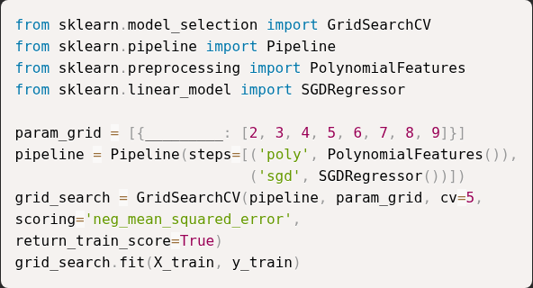
What should the blank space contain?
"degree"
"PolynomialFeatures_degree"
"sgd__degree"
"poly__degree"
Q51MSQ1 markselect all that apply
Which of the following is a hyper parameter?
intercept_ in LinearRegression
degree in PolynomialFeatures
n_neighbors in Ridge
min_samples_split in DecisionTreeClassifier
Q52MCQ1 mark
You are using statsmodels to forecast a time series. Which of the following represents the correct sequence of code to define an ARIMA model, train it, and view the results?
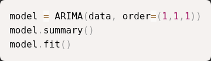
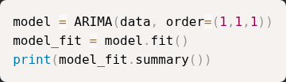
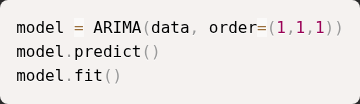
Q53SA2 marks
For a LinearRegression model with equation assume that the noise term . The model parameters satisfy the constraint A LinearRegression model is trained without intercept as shown below:
What is the value of ? Enter your answer rounded to three decimal places
Q54MCQ2 marks
Which of the following is required for user-based collaborative filtering?
User–item interaction matrix
Item content features
User features (e.g. age, gender etc.)
Image embeddings
Q55SA2 marks
Compute cosine similarity for the two items which have feature vectors as given below(rounded to 2 decimals).
Q56SA2 marks
Consider the following code snippet:
If the shape of X is , what will be the number of features in X_transformed?
Q57MCQ2 marks
Given the following code using BaggingClassifier with KNeighborsClassifier as the base estimator:
Which of the following statements is correct?
Above code uses bootstrapping to generate samples for each base classifier.
model will be tested on out of the bags samples.
Due to weights="distance", each base KNN classifier will treat all neighbors equally in terms of voting power.
The ensemble will consist of 3 base KNN classifiers.
None of these
Q58MSQ2 marksselect all that apply
Which of the following algorithms may get impacted by feature scaling?
LinearRegression
DecisionTree
SVM
NaiveBayes
Q59MCQ2 marks
Given below a y_train list which consists of coffee order's preference by the customers in a cafe.
MultiLabelBinarizer from sklearn library has been used to convert the y_train into numbers, so which of the following option matches with the output of the following code ?